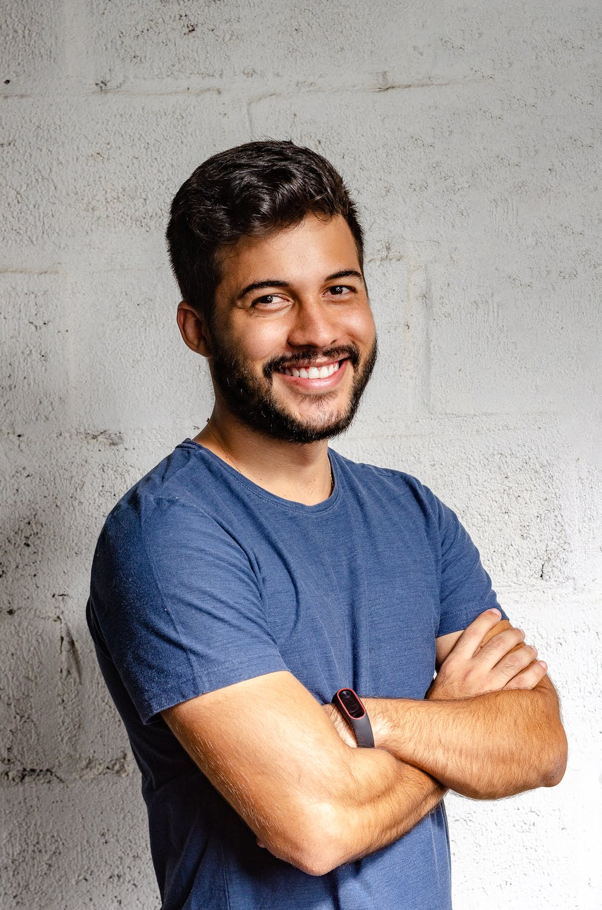

Our Founder

Amato Marinelli
Amato Marinelli was hit hard by the economic crisis in 2011 and was forced out of his job and had to find shelter with his parents. His experience facing this hardship drove him to create a non-profit organization to make sure no one else would have to go through the same thing.
BroadCast began as a small project to help those in our local community. Helping people find the source of income they need in a difficult time and empowering our townfolk was our number one goal.
As BroadCast grew larger, we realized that we could use this same concept to help people even outside of our local area.
Just like the organization, our goals have not changed, they’ve only gotten bigger. Our mission is to help people around the globe in struggling financial situations. We provide the job network they need to find them the right place and appropriate pay. That’s why people have been coming to our non-profit for over twenty years now.
And we’re still just getting started.
 BroadCast Group 2020
BroadCast Group 2020